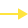
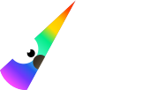

Становимся точкой входа в мир социально значимых цифровых продуктов
Наши ценности. Забота о пользователях:
влюбляемся в проблему, а не в решение.
Забота о друг-друге: помогаем сокомандникам с обучением, оборудованием, иногда вместе ездим на море 🌊 и
кататься на лыжах ⛷🏂

История Muteit.app
Это первый продукт, который комьюнити UW взялась развивать. У Оли Найда появилась идея, мы её
подхватили. Вместе хотим заботиться о людях с синдромом «стеснительного мочевого пузыря»
Muteit.app


Почему объединились?
У каждого внутри сформировалась потребность в заполнении пустоты
значимыми и реально помогающими людям ценностями и действиями.
Unicorn Witnesses это про путь. Команда это тоже про путь.
- Путь объединяет команду и комьюнити и делает одним целым.
- Ценности здоровья, экологии.
- Некоммерческое сотрудничество и независимость
А это наши голоса

Алексей Долгих
CTO, Quality assurance
Комьюнити Unicorn Witnesses помогает людям и
это меня очень мотивирует
делать все больше и качественнее. Мы каждый день учимся использовать силу цифровых продуктов. Передаем
новичкам навык быть с нами командой, которая гибко умеет подстраиваться под любое изменение запроса
пользователей.
Мы строим качественный конвейер, создав который хотя-бы на 1%, мы избавим людей от рутинных действий.
Идём к цели через автоматизацию действий по запросу внутри команды и внедрение умных помощников в виде
цифровых мини-продуктов проверенных миллионами на G2.com и Capterra.com.
Показать больше
Максим Литвинов
DevOps engineer
Моя мечта была — создать что-то полезное для
общества, что будет
помогать людям каждый день. Unicorn Witnesses как раз помогает воплотить мою мечту в реальность. В
объединении мы активно взаимодействуем с командой: придумываем и воплощаем идеи в жизнь, занимаемся
разработкой, анализируем и прогрессируем. Присоединяйтесь к нам и мы будем вместе создавать
по-настоящему социально-значимый цифровой продукт, который будет действительно помогать людям.
Показать больше
Я люблю решать проблемы связанные с психологией людей, особенно если они требуют необычного подхода.
Такого подхода как у нас в Muteit. Именно поэтому я в команде. Где мы решаем проблему комплексно, а не
просто работая над следствиями.
Показать больше
Александр Веревкин
DevOps engineer
Всегда хотел заниматься чем то большим, современным, полезным для социума и в очередной раз оставив
последние силы на не любимой работе решил что пора меняться и найти новые пути развития. В процессе
поиска себя познакомился с командой Unicorn Witnesses и это дало надежду и шанс изменить свою жизнь и
жизнь окружающих к лучшему.
Показать больше
Началось всё как всегда: «Эй, у меня крутая идея»! Что если сделать продукт, который поможет мне не
стесняться в туалете и заглушит естественные туалетные звуки. Моя харизма сработала и команда помогла
реализовать задумку. Более того, мы весте так вдохновились идеей, что теперь создаём экосистему заботы
о человеке в туалете! Так моя жизнь стала неразрывной с цифровыми продуктами и объединением UW.
Показать больше
Евгений Христенко
CTO, Full-stack developer
Началось всё как всегда: «Эй, у меня крутая идея»! Что если сделать продукт, который поможет мне не
стесняться в туалете и заглушит естественные туалетные звуки. Моя харизма сработала и команда помогла
реализовать задумку. Более того, мы весте так вдохновились идеей, что теперь создаём экосистему заботы
о человеке в туалете! Так моя жизнь стала неразрывной с цифровыми продуктами и объединением UW
Показать больше
Комьюнити Unicorn Witnesses помогает людям и это меня очень мотивирует делать все больше и
качественнее. Мы каждый день учимся использовать силу цифровых продуктов.
Показать больше
Андрей Ануфриенко
CTO, Quality assurance
Комьюнити Unicorn Witnesses помогает людям и это меня очень мотивирует делать все больше и
качественнее. Мы каждый день учимся использовать силу цифровых продуктов.
Показать больше
Комьюнити Unicorn Witnesses помогает людям и это меня очень мотивирует делать все больше и
качественнее. Мы каждый день учимся использовать силу цифровых продуктов.
Показать больше
Юлия Предеина
CTO, Quality assurance
Комьюнити Unicorn Witnesses помогает людям и это меня очень мотивирует делать все больше и
качественнее. Мы каждый день учимся использовать силу цифровых продуктов.
Показать больше
Юлия Предеина
CTO, Quality assurance
Комьюнити Unicorn Witnesses помогает людям и это меня очень мотивирует делать все больше и
качественнее. Мы каждый день учимся использовать силу цифровых продуктов.
Показать больше
Юлия Предеина
CTO, Quality assurance
Комьюнити Unicorn Witnesses помогает людям и это меня очень мотивирует делать все больше и
качественнее. Мы каждый день учимся использовать силу цифровых продуктов.
Показать больше
Юлия Предеина
CTO, Quality assurance
Комьюнити Unicorn Witnesses помогает людям и это меня очень мотивирует делать все больше и
качественнее. Мы каждый день учимся использовать силу цифровых продуктов.
Показать больше
Юлия Предеина
CTO, Quality assurance
Комьюнити Unicorn Witnesses помогает людям и это меня очень мотивирует делать все больше и
качественнее. Мы каждый день учимся использовать силу цифровых продуктов.
Показать больше
Комьюнити Unicorn Witnesses помогает людям и это меня очень мотивирует делать все больше и
качественнее. Мы каждый день учимся использовать силу цифровых продуктов.
Показать больше